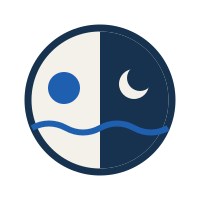

Porta do palácio aberta pro Mediterrâneo: sol na linha do mar.
Loggia de três arcos. Arquitetura pura, mais quiet luxury.

C · Day to NightSol e lua sobre a onda — a tagline em um selo.
Escudo de clube com a arcada dentro, pra bordado e etiqueta.